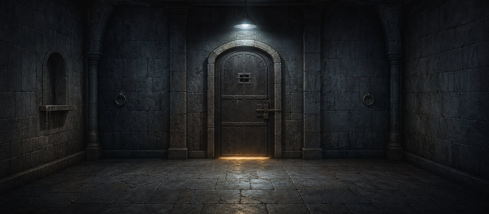
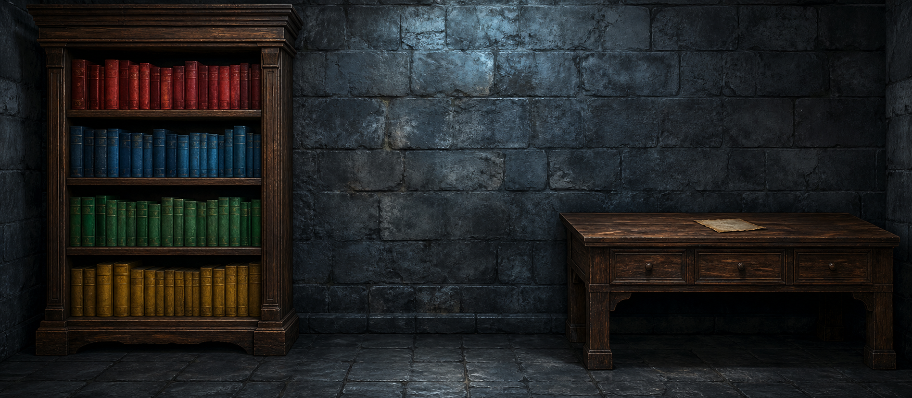
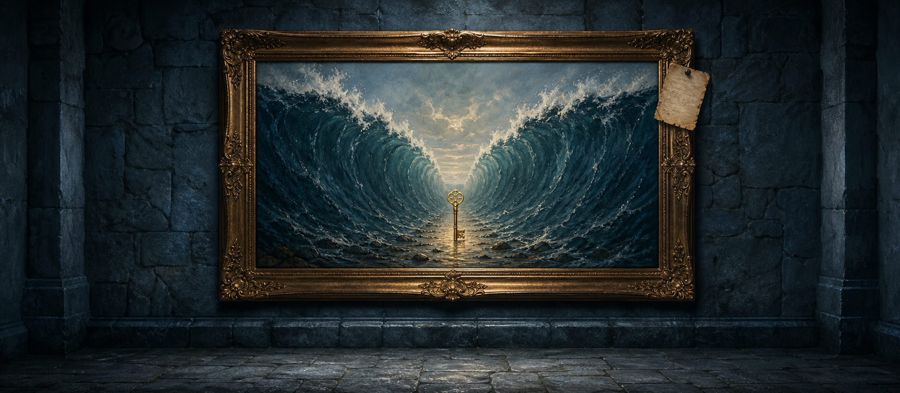

プレイヤーはRoom Aを探索
画面上の場所やオブジェクトを調べ、アイテムを集め、鍵のかかった仕掛けを解いていきます。

Concept
画面上の場所やオブジェクトを調べ、アイテムを集め、鍵のかかった仕掛けを解いていきます。
別の部屋にいるパートナーが、自分だけでは見られない情報を見つけてトランシーバーで伝えてきます。
片方の部屋のヒントが、もう片方の部屋の答えになる。観察と説明がそのままゲームプレイになります。
Rooms and clues


How it works
パートナーの名前と性格を決めてゲーム開始。
Room Aをクリック探索しながら、トランシーバーで相談。
Room Bの情報と組み合わせて、双方の出口を開ける。